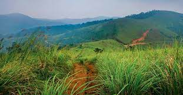
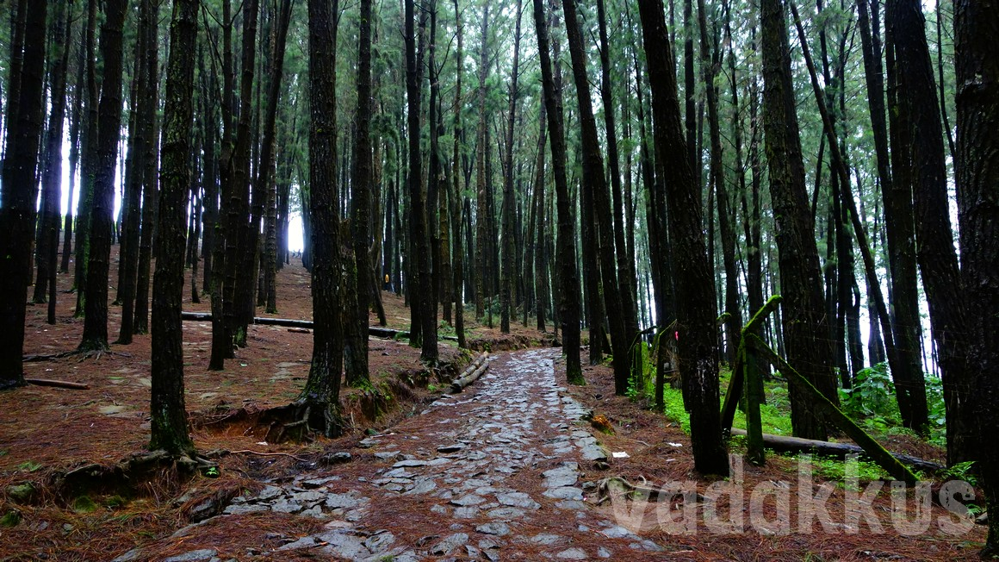
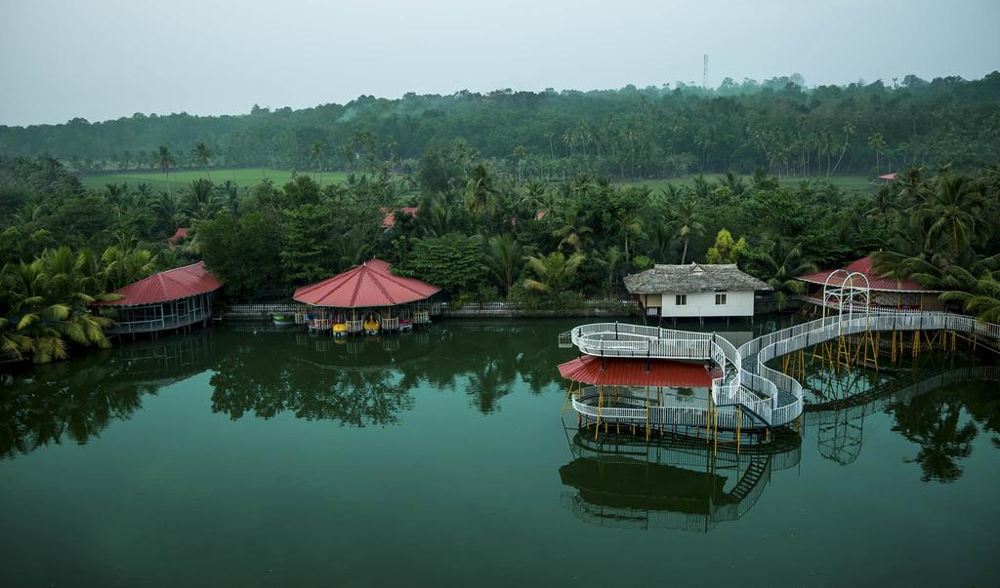
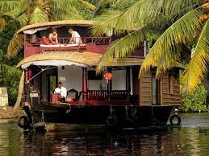

Places To Visit
Illikal Kallu

Located at a height of 6000 ft above the sea level in the Western Ghats of Kottayam, Kerala, Illikkal Kallu is a major tourist attraction and one of the most pristine spots in all of India.
Vagamon
Located near Kottayam-Idukki Border, Wagamon, popularly known as Vagamon, is a quiet offbeat hill station in Kerala. With a pleasant climate ,this spot has meandering rivulets and lush green hills surrounding it.
Pine Forest
This place has nothing for you to see but a lot to feel.'Walking into the woods' is a popular English phrase and going to the Pine Hills, you will actually walk into the woods.
Popular Things To Do
Mango Meadows Agricultural Theme Park
With Mango Meadows Agricultural Theme Park reachable in a few steps, the holiday park offers accommodations, a restaurant, an outdoor swimming pool.
Boating Through Kumarakom Backwaters
The best boating tours in Kumarakom are like therapy for the mind. The lush coconut plantations and greenery all around, beautiful paddy fields, panoramic views
Trekking Through Elaveezha Poonchira

Known for its magnificent views and surrounded by three hills – Mankunnu, Kodayathoormala and Thonippara – Elaveezha Poonchira is a must see tourist place in Kottayam.